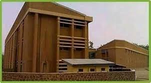

New Hostels Commissioned
Published on January 3, 2025
Usmanu Danfodiyo University has just commissioned a new set of hostels aimed at improving the accommodation situation for students. The new hostels offer modern amenities and are strategically located within the campus to ensure easy access to academic buildings, recreational facilities, and other essential services. The Vice Chancellor, during the commissioning, emphasized the university's commitment to providing a conducive living environment for students, which will support their academic and personal growth.
Back to News